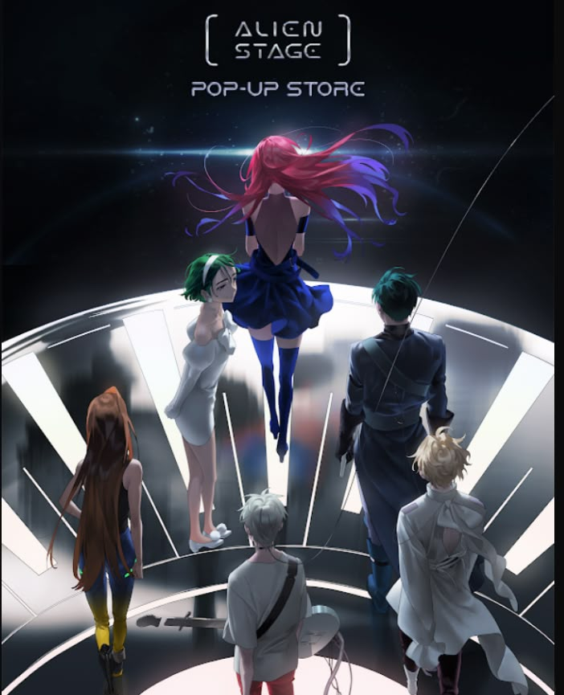

About
general
Alien Stage is a unique and immersive storytelling project that blends music, art, and futuristic themes. Set in a distant future where Earth has become a stage for intergalactic talent, the story follows a group of human contestants competing in a cosmic survival show to prove humanity's worth.
Goal
Our goal is to explore deep topics like identity, survival, and the cost of fame—all wrapped in stunning visuals, captivating music, and dynamic characters. Whether you're here for the art, the lore, or the music, Alien Stage offers an experience that's out of this world.
Join us as we unravel the drama behind the stage lights—because in this show, the spotlight might just be deadly.
